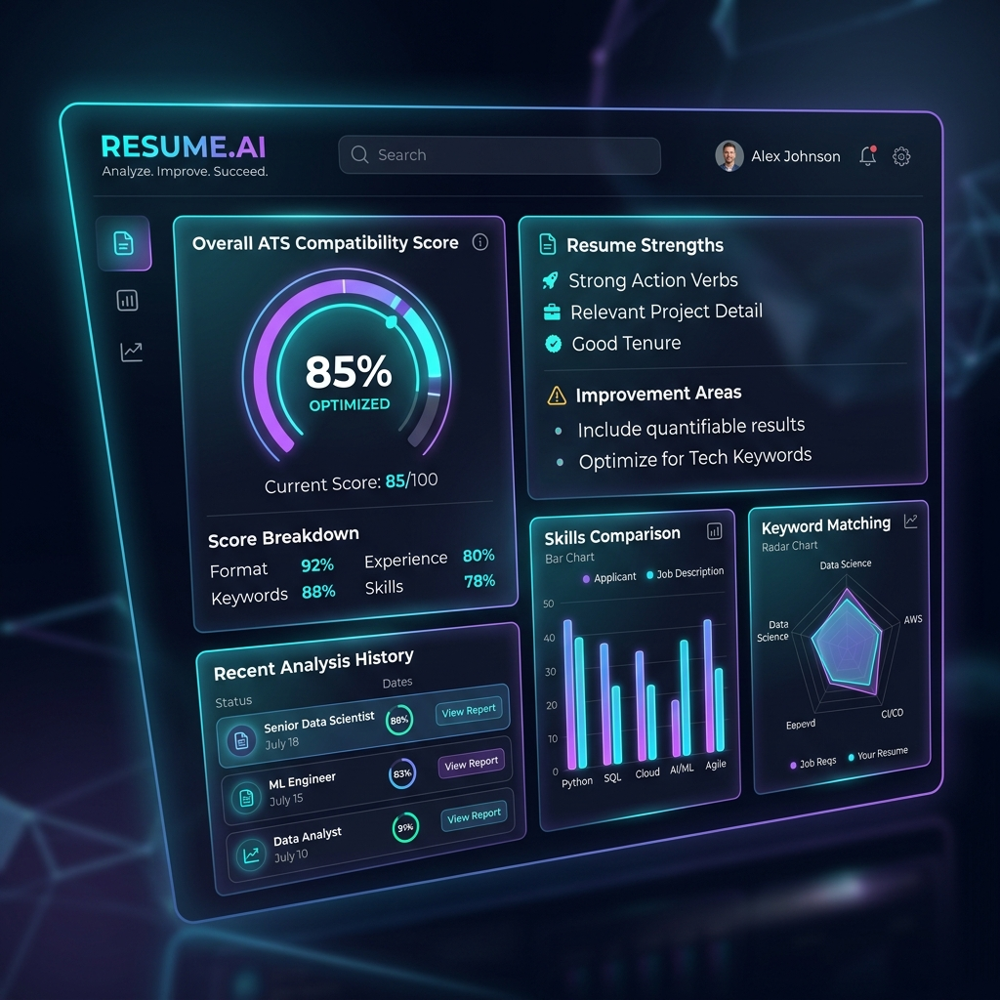
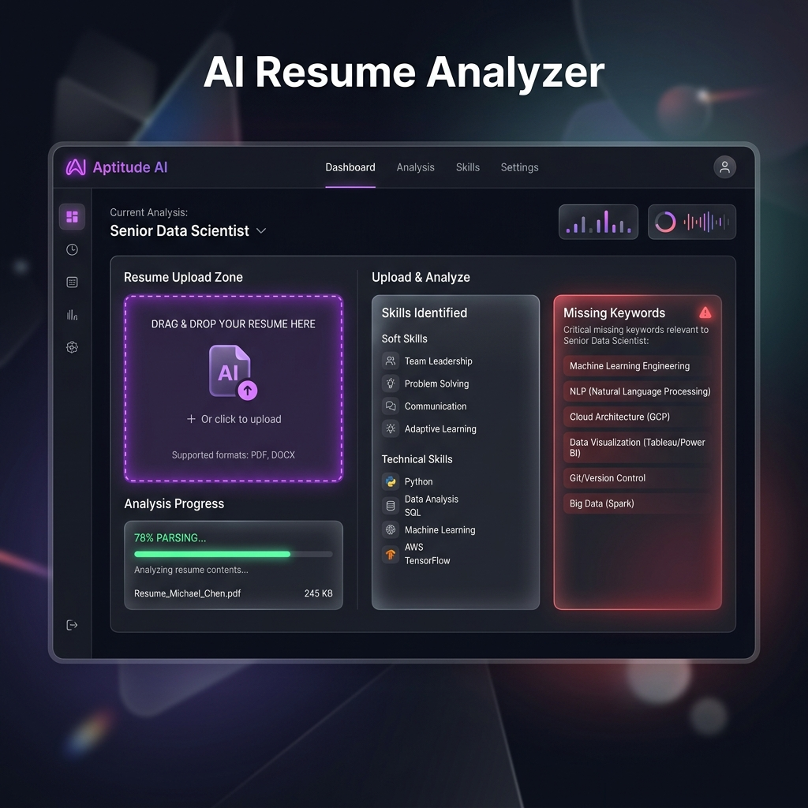

A Premium Full-Stack Application Powered by Google Gemini AI
Artificial Intelligence / Web Engineering
Angular 19, Express, Gemini 1.5
75%+ of resumes are screened out before a human recruiter sees them.
80%+ candidates struggle to verbalize their experience in technical interviews.
Automatically extract data from PDFs/Word files, parse it using LLM intelligence, and grade it against industry targets instantly.
Real-time speech-to-text assessment testing communication, technical accuracy, and answering confidence level.
Evaluate resume gaps and generate customized 30/60/90-day learning schedules with specific objectives and projects.
Uses reactive signals (`signal`, `computed`) for smooth view rendering and robust state handling.
Includes complete Mock Fallback Engines if Gemini API keys are not configured, ensuring 100% test reliability.
{ "overallScore": 85, "weaknesses": [...] }
The code uses safe JSON cleaning regex methods (`.replace(/^```json/i, '')`) to extract data from raw markdown envelopes returned by the AI model. Includes structured try/catch modules with safe static mock backups.
backdrop-filter: blur(16px);
Tailwind CSS is used to enable responsive, mobile-first flexbox grids. Standard typography utilizes Google Fonts (Outfit and Inter) for a premium presentation feel.
The main portal dashboard features real-time dynamic statistics, aggregated ATS metrics, list of uploads, and a visual progress indicator.

The Analyzer page processes resumes and presents grading lists in an easy-to-understand grid format.

Transforming this into a unified career center platform that not only points out gaps but automatically connects candidates to courses and hiring partners.
Questions & Answers Session